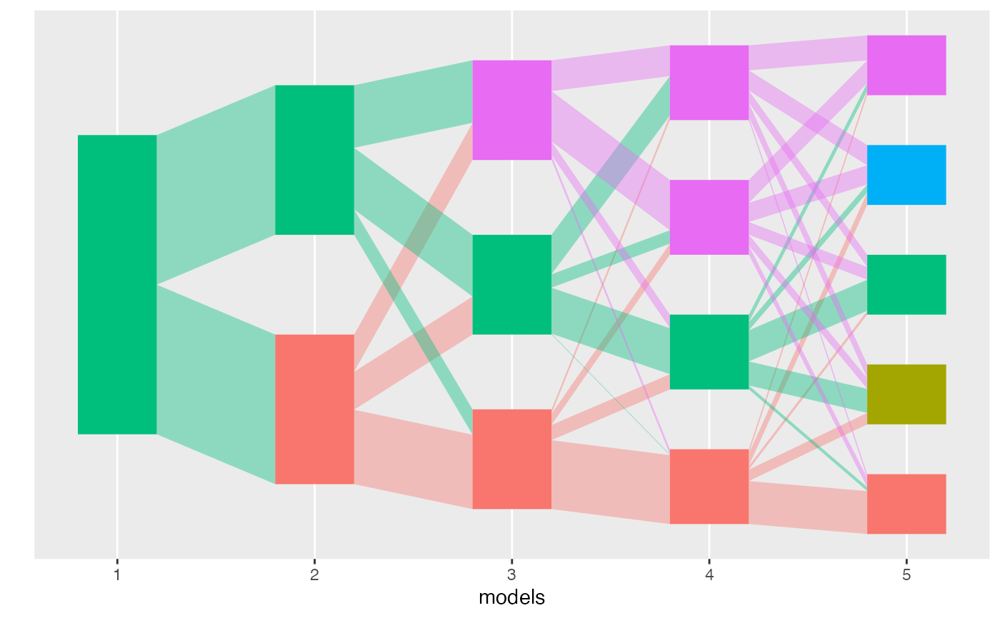

compute_strain_switching_scores_of_model.RdThis function takes an alignment and a model identifier and returns
a data.frame with the strain switching scores for each pair
of topics in that model.
compute_strain_switching_scores_of_model(alignment, model, n_ancestry_levels)(required) an alignment object
(required) a character or integer specifying
the model for which strain switching scores should be computed.
(required) an integer specifying the
maximum number of levels between the target model and the model
hosting the parent topic.
A data.frame providing the strain switching scores
for each pair of topic in the target model.
The strain switching score for a given pair of topic (k1, k2) in model K
is currently computed as follow:
- the path of each topic is identified
- the models K1 and K2 at which each path first appears are identified
- the parent model K' is selected as the "latest" model between K1, K2
and Kmin, where Kmin is the model that is n_ancestry_level ahead
of K
- for each topic k' in K', the strain switching score for the triplet
(k', k1, k2) is computed as r(k') w_in(k',k1) w_in(k', k2)
- the topic k' which maximizes that score for the pair (k1, k2) is returned
together with the score and K'.
library(purrr)
data <- rmultinom(10, 20, rep(0.1, 20))
lda_params <- setNames(map(1:5, ~ list(k = .)), 1:5)
lda_models <- run_lda_models(data, lda_params)
#> Using default value 'VEM' for 'method' LDA parameter.
#> Using default value 'VEM' for 'method' LDA parameter.
#> Using default value 'VEM' for 'method' LDA parameter.
#> Using default value 'VEM' for 'method' LDA parameter.
#> Using default value 'VEM' for 'method' LDA parameter.
alignment <- align_topics(lda_models, method = "transport")
plot(alignment)

compute_strain_switching_scores_of_model(
alignment,
model = 5,
n_ancestry_levels = 2
)
#> # A tibble: 10 × 6
#> m k1 k2 parent_m parent_k sss
#> <dbl> <int> <int> <fct> <int> <dbl>
#> 1 5 1 2 4 1 0.146
#> 2 5 1 3 3 1 0.201
#> 3 5 1 4 4 1 0.135
#> 4 5 1 5 3 2 0.113
#> 5 5 2 3 4 2 0.148
#> 6 5 2 4 4 1 0.0752
#> 7 5 2 5 4 4 0.0894
#> 8 5 3 4 4 2 0.0763
#> 9 5 3 5 3 2 0.175
#> 10 5 4 5 4 4 0.127